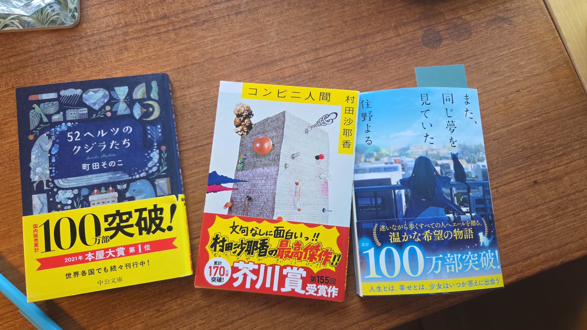
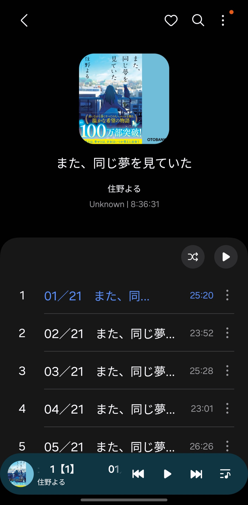
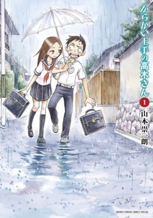

Learning Japanese
🥞 I'd like to dedicate this page to my wife.
🥞 Her continued patience means a lot to me.
Please scroll down to the bottom of this page for a list of recommended resources.
While I don't mean for this section to be a tutorial on how to get started, as many are available already, I hope this will be a source of inspiration for people thinking about learning this challenging yet beautiful language.
I've been learning Japanese on and off for the last 4 years. My interest was first sparked when I happened to watch Livakivi's fantastic video on teaching himself Japanese. Since then I've been hooked on his learning Japanese series, and I find it quite motivating whenever I find myself wanting to pick it up again after a break, or my energy for it is waning.
Anki
Livakivi's technique is a mixture of vocabulary drilling and consuming Japanese content such as movies, anime, manga and books. For vocab drilling, he uses Anki, which I love, and contend got me through University. So I was already a fan.

Anki is essentially software flashcards. It uses a 'Spaced Repitition' algorithm to determine which cards you are most likely to forget, and shows them to you that day, the idea is that every day you review the cards it shows you, and it will guarantee that you don't forget what's on them.
Anki is amazing. It's a fantastic tool for making sure you remember vocabulary. If I had access to this software back in school when I was studying German .....
I probably would have done just as badly, as I wasn't interested in learning German.
There are many opinions on what the most effective method is, but the way I've been doing it so far (based on Livakivi's approach), is to add a few new cards every day from an existing deck of vocabulary cards.
Another method recommended by Livakivi and others (like this site, and this guy) is "sentence mining". This consists of reading (or watching japanese content with subtitles) while looking up any unknown words or phrases, and adding them as flashcards to an anki deck.
Which brings me on to . . .
Reading 読む
I've recently reached the point where I've started to read books in Japanese.

The books pictured from left to right:
EN: 52 Hz Whales, Convenience Store Human, I had that same dream again.
日本語: 52ヘルツのクジラたち，コンビニ人間，また同じ夢を見ていた
I'm currently reading (and listening to the audio book of) "I had that same dream again", it's narrated by an elementary school girl, and follows her as she ponders the meaning of happiness, it offers a child's perspective on adult themes such as sex workers, loneliness & Japanese work culture. I'd say the book is relatively begginer friendly, as the vocabulary is usually limited to that of the child narrator. I'm at the level where I am able to enjoy the story, while still needing access to a dictionary for some words.
Even though I've been learning for a few years now, this book represents a challenge for me. Every scentence there's probably one word I have to look up, and every now and then I'm not quite sure what a scentence means (even if I do understand all the words) and I have to pass it through google translate to get a better idea.
Listening 聞く
As you would probably expect, the only thing that gets you better at listening . . . is listening.

I'm trying to tie listening into my reading practice by playing the audiobook at the same time. I don't do this all the time though, as I tend to miss quite a bit when I do this. I don't like to constantly pause the audio to do word lookups, and the voice actor can speak at quite a pace. It can be quite tiering.
Grammar 文法
I don't really study grammar any more, as most of my study comes from reading and listening to native matierial. But at the begining, a certain amount of it was essential. Japanese has a completely different grammar system to indo-european languages, and without intentional study it would be a lot more difficult to pick up. Especially if you're teaching yourself.
I started by reading through Tae Kim's Guide to Learning Japanese, which is completely free. After that, I would read manga, and simply google anything I didn't understand.
I must recommend one youtube channel, though the creator has since sadly passed away, and that's Cure Dolly. Her videos on Japanese sentence structure were completely ground breaking for me. Without them I would still be quite stuck. Her videos are based on a book Making Sense of Japanese by Jay Rubin, which is also brilliant (I own this book and recommend reading it). That's it for grammar really.
The approach to grammar study I would recommend is: Start reading something simple.
I would recommend a manga like Teasing Master Takagi San からかい上手の高木さん then when you stumble upon a scentence where a simple dictionary lookup isn't making the meaning clear, I would google it and figure out what's going on, or ask ChatGPT to explain it to you!

Lots of people have started with Teasing Master Takagi San as it's recommended for begginers. so explanations should be readily available.
The anime based on the manga is available on Netflix, and I recommend watching it with Japanese audio & subtitles and attempting to follow along, it's a good one to help train your ear to the language.
The main characters are young children, so the vocabulary is limited, but it's still quite entertaining.
If you're wandering what からかい上手の高木さん literally translates to, it's: "Takagi San who is good at teasing". Feel free to dissagree with me about that translation, but you can see why they changed it for the english version!
Grammar:
- Tae Kim's Guide to Learning Japanese
- Cure Dolly (rest in peace <3)
Vocabulary:
Advice & Motivation:
- Livakivi - Documented his entire jouney from absolute beginner, to being fluent and living in Japan for 6 months
- Stevejs - This guy is a MACHINE "1.5 Years To JLPT N1 - A Timeline"
- The Moe Way - Good advice on how to get started
- Matt vs Japan - This guy is internet famous for teaching himself Japanese to near native level
Books:
- Remembering the Kanji (RTK) - A great book for helping you to remember all 2000 kanji characters. I have this one very much recommend it. WARNING - It demands a lot of your time! I pissed off my wife with it! 😅 ❤ I love you hun ❤
- amazon.jp - You'll need to create a seperate amazon account
- Making Sense of Japanese - by Jay Rubin, an excellent little Japanese Structure and Grammar book.
- からかい上手の高木さん (1) - "Teasing Master Takagi San" Vol. 1
Audio Books:
- audiobook.jp - At the time of writing, this site lets you download the audio files of the audiobook you purchase
Anime:
- animelon.com - Watch anime for free while having access to Japanese subtitles with a great lookup system
Paid Software:
- migaku - A Browser extension. Quick lookups for words on websites and in subtitles for shows on Netflix and other streaming services. Great integration for Anki + has their own SRS system. Also provides AI scentence & grammar explanations. I highly recommend this if you can afford it.